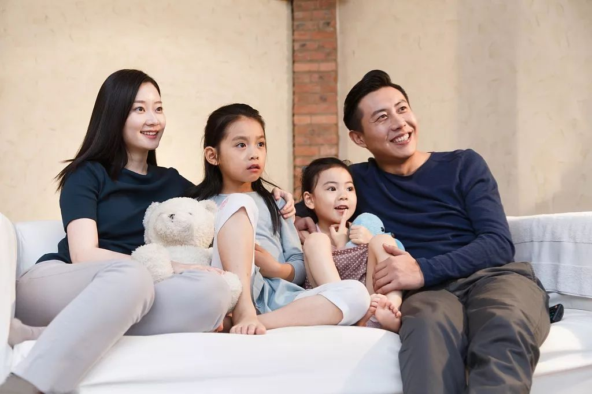
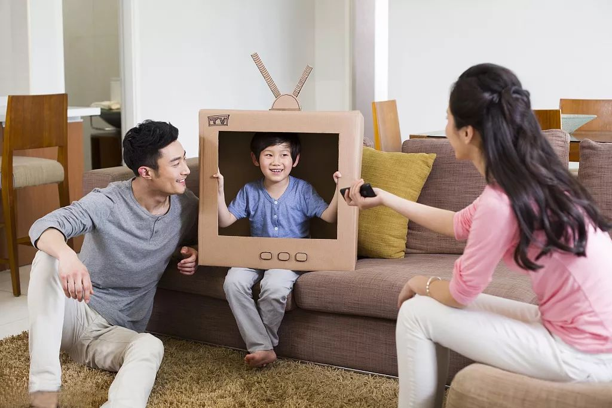

资讯> 看电视的搏斗：要不要让孩子看电视
看电视的搏斗：要不要让孩子看电视

孙燕姿最新的微博，讲到五岁的儿子短暂生病时的母子两个人艰难又甜蜜的冲突，其中一项是两个人为看电视的“搏斗”。
"还要看电视”VS“不准再看电视了"，这种围绕着看电视的“搏斗”，是很多父母经历过或正在经历的烦恼。
为人父母，不能完全不让孩子看电视，也不能随便他们想看多少就看多少，所以究竟要怎么限制孩子看电视的时间？又怎么为孩子建立起健康的看电视的习惯呢？
儿科学会的建议
美国儿科学会（The American Academy of Pediatrics，AAP）对于不同年龄 段的孩子看电视的建议是：
0到18个月：不能看电视
18个月到2岁：可以和父母一起看一点电视
3岁到5岁：每天不超过一个小时的教育节目
6岁到18岁：应该限制看电视的时间，包括电视、网络和电脑游戏。
怎么帮助孩子建立健康的看电视习惯
1.把电视放在专门的房间，鼓励孩子做和看电视无关的活动。
2.在吃饭时间关掉电视。
3.不能允许孩子边写作业边看电视。
4.把看电视当成一种特权。不要让孩子把看电视当成理所当然的活动，而是要让他们需要一些条件才能赢得看电视的奖励，比如只有在他们写完作业、做完家务后才能看电视。
5.尽量在工作日禁止看电视。工作日时工作、学业这些事情都已经让家人共处时间所剩无几，所以在工作日尽量不开电视，可以把节目保存下来，然后在周末看，这样一家人可以有更多时间一起吃饭、玩游戏、运动。
6.做个好榜样。对自己看电视的时间也要有所限制。
7.检查电视节目单。找到适合家人一起看的节目，比如适合小孩子发展的、不暴力的节目，也可以选择有助于培养小孩子兴趣和学习习惯的节目。
8.提前浏览电视节目内容。确保节目是适合小孩子观看的。
9.利用电视的儿童锁。很多电视都有儿童锁，可以锁住特定的比如暴力或者性内容的节目，使用儿童锁可以过滤节目，防止孩子无意中打开来不该看的节目。
10.制定家庭看电视的时间表。确保这个时间表是全部家庭成员都同意的，并把时间表贴在显眼的位置，以便于每个人都知道在什么时间可以看什么节目，保证在时间表以外的时候电视是关着的。
11.和孩子一起看电视或者上网。看看孩子看的节目是不是适合他们。
12.跟其他父母或者孩子的老师谈谈。对于如何控制孩子看电视，看看他们有什么建议和好办法。
13.找到可以替代电视的好玩的活动。如果想让孩子把注意力从电视屏幕上挪开，最好是给他们一些替代的选择，比如大家一起玩游戏、捉迷藏或者去户外玩耍。
和孩子谈论电视内容也很重要
和孩子讨论他们在电视上看到的东西，可以乘机分享你的观点和价值观。如果电视上出现有你不赞成的行为，借这个机会和孩子谈谈你的看法。
比如你觉得那些人那样打架OK吗？他们本可以怎么做？如果是你你会怎么做？
比如你怎么看那些人在party上的行为？你觉得他们所做的是错的吗？
比如在某些人或者角色被歧视时，跟孩子谈谈为什么公平对待别人是重要的。
另外，利用电视节目解释某些令人困惑的处境或者表达你对难以启齿的主题的感受，比如对性、对爱，对毒品，对饮酒，对吸烟，对工作，对行为，对家庭生活。教导孩子对自己所看到的东西发问并从中学习。